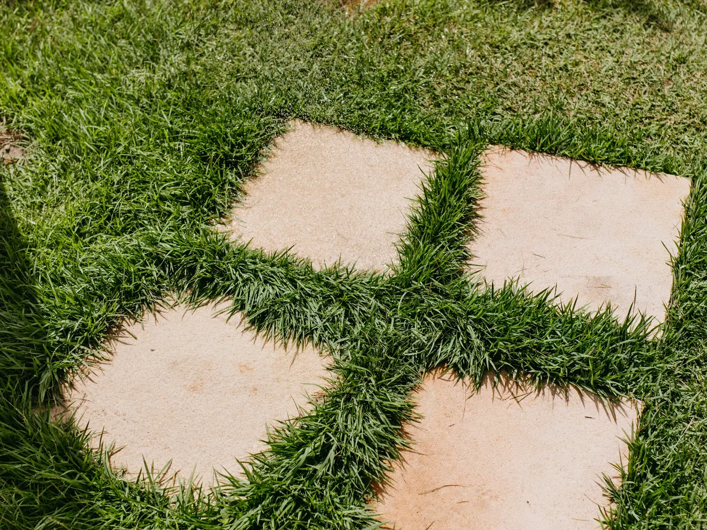

Space to use
Paving & Patios

A well-planned patio can become a natural extension of the home. We prepare the sub-base carefully, set out the layout and consider edges, paths, seating space and drainage from the beginning.
Material choices and patterns are balanced with the property and the way you want to move through the garden.